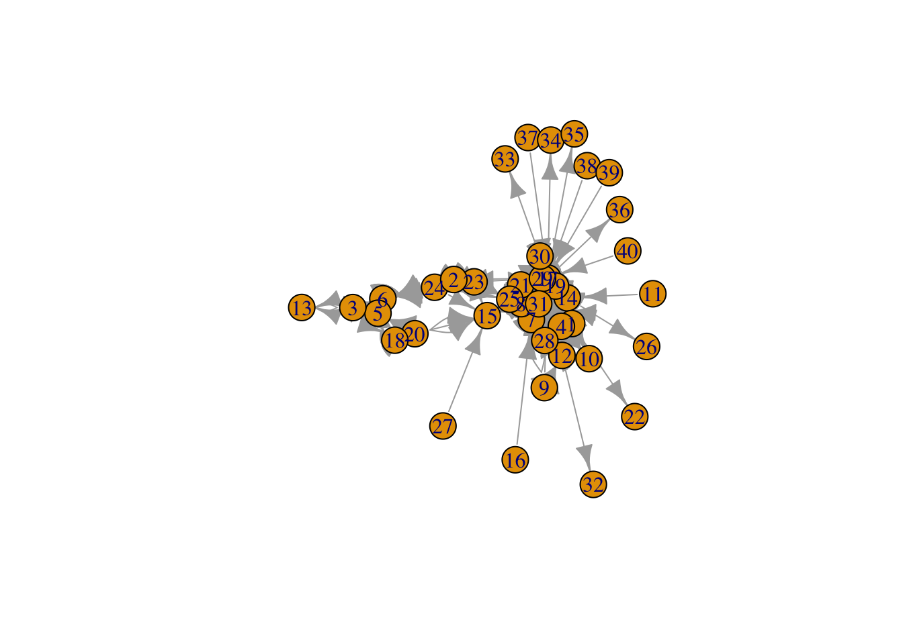
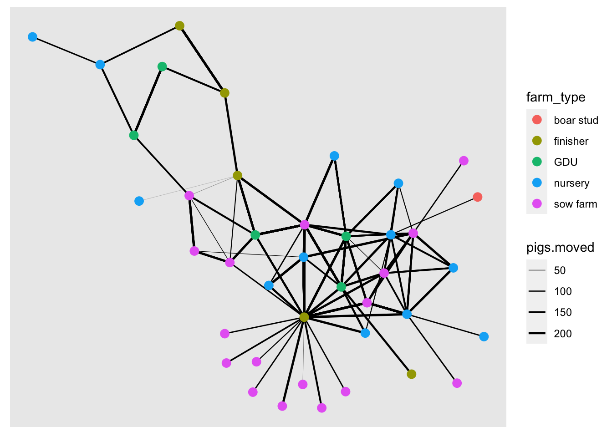
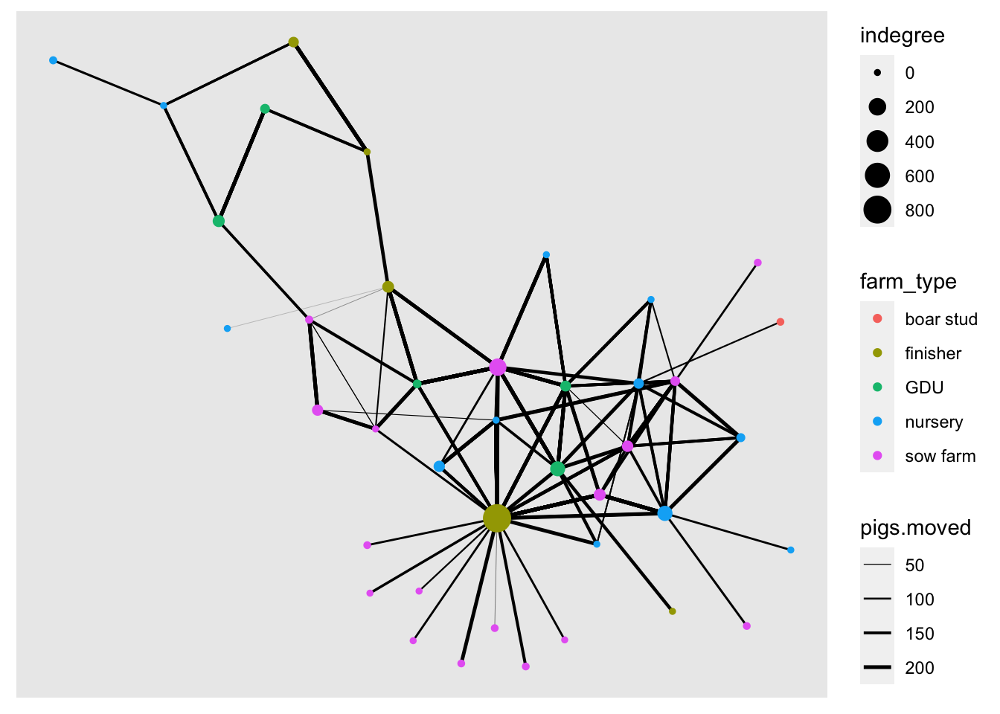
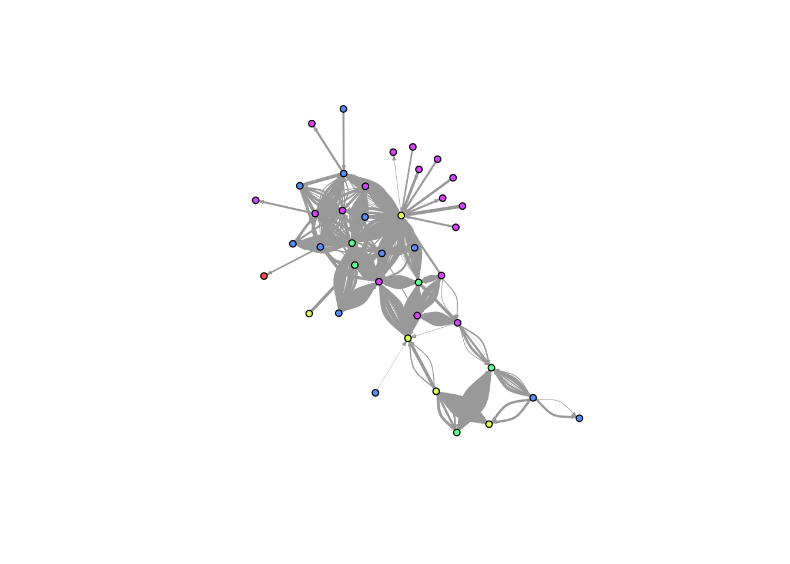
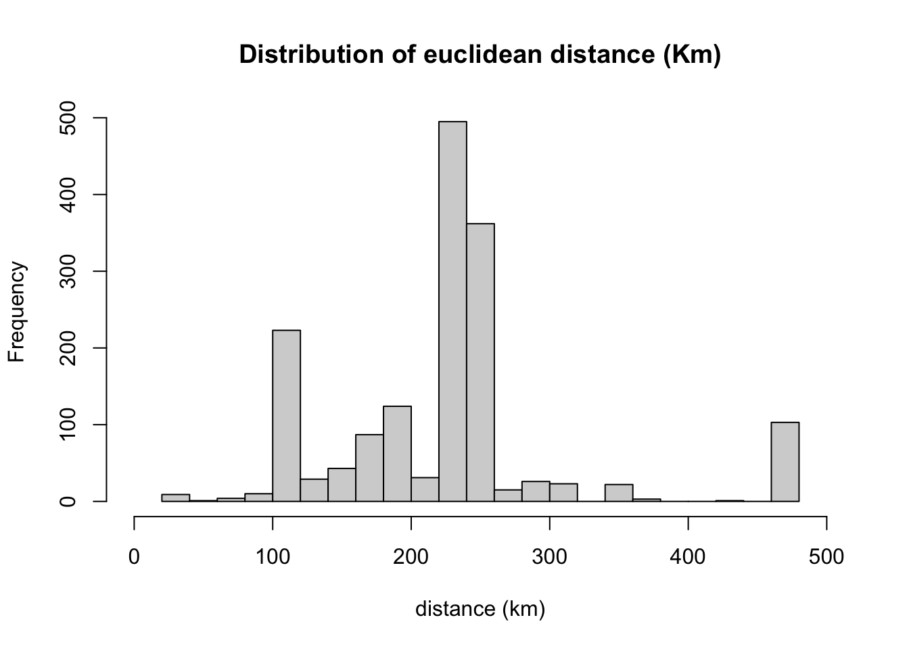

Lab 1
Libraries we will use (install if necesary):
install.packages("readr")
install.packages("igraph")
install.packages("dplyr")
install.packages("raster")
install.packages("scales")
install.packages("intergraph")
install.packages("network")
install.packages("RColorBrewer")
install.packages("tidygraph")1. Network visualization
1.1 Loading the data and visualizing the network
library(dplyr)
library(scales)
library(ggplot2)
library(ggraph)
# Libraries for network objects
library(igraph)
library(tidygraph)
# Loading the data from the STNet package
node <- STNet::SwinePrem
edge <- STNet::SwineMovWe use the function graph_from_data_frame() to create the network from a data.frame. This function takes as arguments:d which requires the contacts data, vertices which is the data of the nodes (farms in our example), and directed which specifies if we want to consider the direction of the contact.
# Create the network
net <- graph_from_data_frame(d=edge, vertices=node, directed=T)
# We can examine the contents of the network using the function summary()
summary(net)## IGRAPH 7810edd DN-- 40 1611 --
## + attr: name (v/c), lat (v/n), long (v/n), farm_type (v/c), date (e/c),
## | pigs.moved (e/n), type_orig (e/c), type_dest (e/c)The result will show a summary of the network. The first line shows that is an object class igraph with 40 nodes and 1611 contacts (edges). Then we have a list of all the attributes of the network. The network attributes can be node attributes (n) or edge attributes (e).
Here we can also see the attribute class:
- c = character.
- n = numeric.
For example, the attribute “name(v/c)” its a node attribute of class character, and the attribute “pigs.moved (e/n)” is an attribute of the edge of class numeric.
To visualize the network we can use the function plot().
#plot network#
#for help look look for: ?plot.igraph#
plot(net)
This figure looks a bit messy, to make it more informative we can visualize dome of the parameters. We use the arguments edge.arrow.size to adjust the size of the arrowhead, vertex.size to adjust the node size, and vertex.label to remove the names of the nodes.
#make it clearer: adjust size, remove labels#
plot(net, edge.arrow.size=0.2, vertex.size=4, vertex.label=NA)
Excercise: Change the size of the nodes and the arrows to make a different graph.
1.2 Node color
We can get specific attributes from the igraph object using V() for nodes, and E() for edges.
The same way we do for a data.frame, we can create new attributes of the network using the $ operator and assigning a name to a new variables. Now we will craete a new variable for the node color.
# Create a color palette
colpal <- RColorBrewer::brewer.pal(length(levels(node$farm_type)),
"Dark2")
# Assign a new variable for the color:
V(net)$color <- colpal[factor(V(net)$farm_type)]
#plot with colors
#vertex.color assigns colors by calling to the newly created "color" or "color2" variables that are now in the vertex (so node) dimension of the network#
#the vertex dimension is called to by naming it V(net)#
plot(net, edge.arrow.size=0.2, vertex.size=4, vertex.color=V(net)$color, vertex.label=NA)
legend("bottomleft", legend = levels(factor(V(net)$farm_type)), col = colpal, pch = 16, bty = "n")
1.3 Layouts
We can change the position of the nodes using the argument layout. Now we will use different layouts to see how the network changes.
#layout_randomly uses a random location
plot(net, edge.arrow.size=0.2, vertex.size=4, vertex.color=V(net)$color, vertex.label=NA, layout=layout_randomly)
legend("bottomleft", legend = levels(factor(V(net)$farm_type)), col = colpal, pch = 16, bty = "n")
Force directed layouts place the nodes in fixed places based on various criteria. The layouts layout_nicely and layout_with_kk force the network in clear layouts, based on the position of the nodes in the network in terms of connectivity. They also attempt to keep the distance between connected nodes fixed.
par(mfrow = c(1,2))
plot(net, edge.arrow.size=0.2, vertex.size=4, vertex.color=V(net)$color, vertex.label=NA, layout=layout_with_kk)
#the following layouts force nodes to adopt certain shapes#
plot(net, edge.arrow.size=0.2, vertex.size=4, vertex.color=V(net)$color, vertex.label=NA, layout=layout_in_circle)
Excercise: Try different layouts: layout_nicely, layout_with_graphopt, layout_as_star, layout_with_fr, layout_on_grid.
1.4 Tamaño del edge
# Tamaño del edges
# Le daremos al edge la anchura basado en el numero de animales movidos
E(net)$width <- E(net)$pigs.moved
plot(net, edge.arrow.size=0.2, vertex.size=4, vertex.color=V(net)$color, vertex.label=NA, layout=layout_with_kk)
# Dado que el tamaño del edge es muy ancho, usamos la funcion recale para re escalar los valores entre 0.2 y 5
E(net)$width <- scales::rescale(E(net)$pigs.moved, c(0.2, 4))
plot(net, edge.arrow.size=0.2, vertex.size=4, vertex.color=V(net)$color, vertex.label=NA, layout=layout_with_kk)
1.5 Tamaño del nodo
Usaremos el valor de indegree para asignar el tamaño del nodo.
Primero calculamos el indegree usando la funcion degree() con el argumento mode = "in", Y eliminaremos los loops.
#calculate the indegree by calling to net and V(net)
#mode lets you choose between "in", "out" and "all" for the type of degree
#loops=FALSE removes internal farm shipments
V(net)$indegree <- degree(net,v=V(net),mode=c("in"), loops=FALSE)
#plot the network by adding the vertex.size command#
plot(net, edge.arrow.size=0.2, vertex.size=V(net)$indegree, vertex.color=V(net)$color, vertex.label=NA, layout=layout_with_kk)Como podemos ver, hay un nodo que recibe muchos movimientos y oculta la red.
Ejercicio: Como el tamaño del nodo es muy grande, reescala los valores a algo que sea mas informativo.
Tambien podemos obtener el outdegree usando el argumento mode = "out" en la funcion degree().
#give weight to node: outdegree#
#same steps with outdegree#
V(net)$outdegree <- degree(net,v=V(net),mode=c("out"), loops=FALSE)Ejercico: Ahora cambia el tamaño del nodo usando el valor de outdegree.
# Le damos un valor al nodo respecto a su betwenness
# usamos directed=T para considerar la direccion del movimiento
bet <- betweenness(net, v=V(net), directed=TRUE)
# LO reescalamos para que se vean los edges
V(net)$size <- scales::rescale(bet, c(5, 15))
plot(net, edge.arrow.size=0.2, vertex.size=V(net)$size, vertex.color=V(net)$color, vertex.label=NA, layout=layout_with_kk)2 Usando otros paquetes para graficar la red
Ademas de igraph existe otro paquete muy popular para manipular redes en R. el paquete network() provee de casi las mismas funciones que igraph para mapear, pero igraph tiene mas funciones para estadisticas de la red. para cambiar entre formatos existe un paquete llamado intergraph el cual provee funciones para cambiar de un formato a otro.
A continuacion usamos el paquete networkpara graficar los nombres de acuerdo al numero de vecinos.
# Primero obtenemos el numero de vecinos de cada nodo
V(net)$nb <- neighborhood.size(net)
# Luego cambiamos de igraph a network
G <- intergraph::asNetwork(net)
# Y ahora graficamos la red
plot(G, # The name of the network
displaylabels = T, # Queremos que muestren las etiquetas
label.cex = rescale(V(net)$nb, to = c(0.001, 1.5)),# Usamos el numero de vecinos para el tamaño del texto
vertex.cex = 0.001, # Reducimos el tamaño del nodo
arrowhead.cex = 0.001, # Reducimos el tamaño de la flecha
label.pos = 5, # la posicion del nombe 5 = centro
edge.col = "lightgreen") # color de los edges
ggraph
net %>%
as_tbl_graph() %>%
ggraph(layout = 'kk') +
geom_edge_link(aes(alpha = pigs.moved)) +
geom_node_point(aes(col = farm_type, size = indegree))
#3 Calculando la distancia euclediana
library(raster)## Loading required package: sp##
## Attaching package: 'sp'## The following object is masked from 'package:ggraph':
##
## geometry##
## Attaching package: 'raster'## The following object is masked from 'package:tidygraph':
##
## select## The following object is masked from 'package:dplyr':
##
## select# Primero necesitamos incluir la informacion de la localizacion de origen y destino
edge <- edge %>%
left_join(node[c("id", "lat", "long")], by = c("id_orig" = "id")) %>%
rename(O_Lat = lat, O_Long = long) %>%
left_join(node[c("id", "lat", "long")], by = c("id_dest" = "id")) %>%
rename(D_Lat = lat, D_Long = long)
# Calculamos la distancia
edge$dist <- pointDistance(p1 = edge[c("O_Long", "O_Lat")], # Primer set de coordenadas
p2 = edge[c("D_Long", "D_Lat")], # Segundo set de coordenadas
lonlat = T) # Especificamos que usamos LatLong
# dividimos por 1000 para obtener la distancia en KM
summary(edge$dist/1000)## Min. 1st Qu. Median Mean 3rd Qu. Max.
## 24.55 178.00 229.16 223.15 247.91 472.95# Obtenemos los quantiles:
quantile(edge$dist/1000, c(0.05,0.95))## 5% 95%
## 104.6104 472.9462# Podemos usar graficos para demostrar la distribucion de las distancias
hist(edge$dist/1000, # EL valo que vamos a graficar
xlim=range(0,500), # los limites de la grafica
breaks=20, # numero de grupos
main = "Distribution of euclidean distance (Km)", xlab="distance (km)")
boxplot(edge$dist/1000,
ylim=c(0,500),
main = "Boxlot of euclidean distance (Km)", ylab="distance (km)")
Ahora agregaremos las estadisticas calculadas para usarlas despues.
# Agregamos las variables a nuestra data.frame
node <- node %>%
mutate(indegree = V(net)$indegree, outdegree = V(net)$outdegree, nb = V(net)$nb, Bet = bet)Exportamos nuestras tablas para usarlas despues.
# we can export the network as a RDS object using the package readr
readr::write_rds(net, "Data/Outputs/net.rds")
# We will also export the edges with the distance and coordinates
write.csv(edge, "Data/Outputs/edge.csv", row.names = F)
write.csv(node, "Data/Outputs/node.csv", row.names = F)